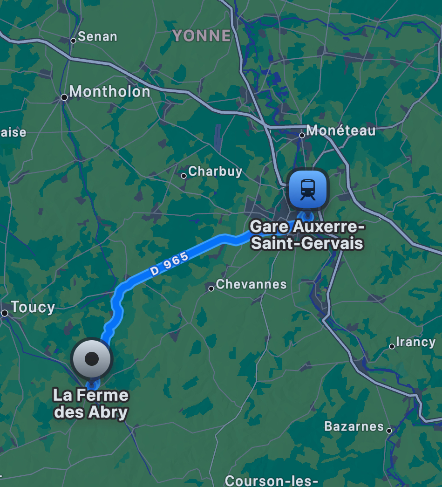

Le mouton Flocon
Curieux, doux et fan des pelotes multicolores.
Race : Shetland • Âge : 2 ans
Personnalité : très câlin et photogénique !
Voir les modalitésPlan de la Ferme des Abri
Flocon vit ici, entouré de champs et d’autres animaux.
Un cadeau spécialement imaginé pour Maman — visite sur RDV, laine récupérable et teintable.
Curieux, doux et fan des pelotes multicolores.
Race : Shetland • Âge : 2 ans
Personnalité : très câlin et photogénique !
Voir les modalitésFlocon vit ici, entouré de champs et d’autres animaux.
Curieux, doux et fan des pelotes multicolores.
Race : Shetland (exemple) • Age : 2 ans
Voir les modalitésAprès la tonte annuelle, la laine est disponible pour récupération. La ferme propose également de petites bouteilles de lait (selon disponibilité).
Contactez la ferme pour fixer un rendez‑vous : Téléphone : 01 23 45 67 89 (exemple) • Email : contact@fermedesabri.example
Q : Est‑ce que Flocon part vivre chez Maman ?
R : Non — Flocon reste choyé à la ferme. Ce site est une jolie mise en scène pour la surprise.
💡 Petite note : cette présentation est une blague affectueuse — le véritable cadeau est un bon d’achat pour des pelotes de laine. Joyeux anniversaire !